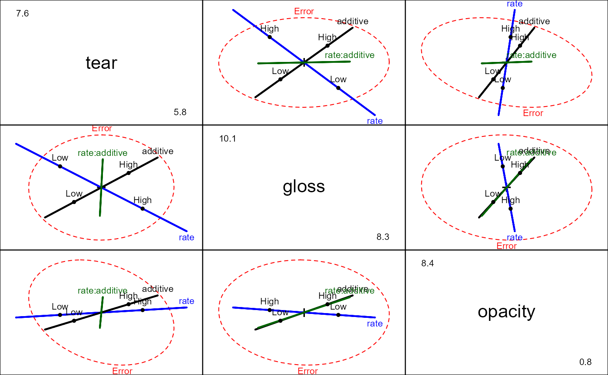

An experiment was conducted to determine the optimum conditions for extruding plastic film. Three responses were measured in relation to two factors, rate of extrusion and amount of an additive.
Format
A data frame with 20 observations on the following 5 variables.
teara numeric vector: tear resistance
glossa numeric vector: film gloss
opacitya numeric vector: film opacity
ratea factor representing change in the rate of extrusion with levels
Low(-10%),High(10%)additivea factor with levels
Low(1.0%),High(1.5%)
Source
Johnson, R.A. & Wichern, D.W. (1992). Applied Multivariate Statistical Analysis, 3rd ed., Prentice-Hall. Example 6.12 (p. 266).
References
Krzanowski, W. J. (1988). Principles of Multivariate Analysis. A User's Perspective. Oxford. (p. 381)
Examples
str(Plastic)
#> 'data.frame': 20 obs. of 5 variables:
#> $ tear : num 6.5 6.2 5.8 6.5 6.5 6.9 7.2 6.9 6.1 6.3 ...
#> $ gloss : num 9.5 9.9 9.6 9.6 9.2 9.1 10 9.9 9.5 9.4 ...
#> $ opacity : num 4.4 6.4 3 4.1 0.8 5.7 2 3.9 1.9 5.7 ...
#> $ rate : Factor w/ 2 levels "Low","High": 1 1 1 1 1 1 1 1 1 1 ...
#> $ additive: Factor w/ 2 levels "Low","High": 1 1 1 1 1 2 2 2 2 2 ...
plastic.mod <- lm(cbind(tear, gloss, opacity) ~ rate*additive, data=Plastic)
car::Anova(plastic.mod)
#>
#> Type II MANOVA Tests: Pillai test statistic
#> Df test stat approx F num Df den Df Pr(>F)
#> rate 1 0.61814 7.5543 3 14 0.003034 **
#> additive 1 0.47697 4.2556 3 14 0.024745 *
#> rate:additive 1 0.22289 1.3385 3 14 0.301782
#> ---
#> Signif. codes: 0 '***' 0.001 '**' 0.01 '*' 0.05 '.' 0.1 ' ' 1
pairs(plastic.mod)
